Ejercicios de límites de sucesiones II
Nota: Infinito no es un número, las operaciones que realizamos con ∞ son simplemente un recurso para ayudarnos a resolver límites.
1Hallar el término general de las siguientes sucesiones:
1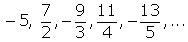
2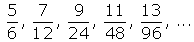
3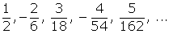
2Estudia la monotonia, la convergencia o divergencia y las cotas (si existen) de la siguiente sucesión: 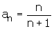
3Probar que 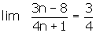. Averigua los términos cuya distancia al límite es menor que 0.01.
4Calcula los siguientes límites:
1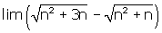
2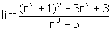
3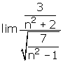
5Hallar los siguientes límites:
1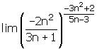
2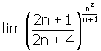
3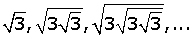
- 1
- 2
- 3
- 4
- 5
Nota: Infinito no es un número, las operaciones que realizamos con ∞ son simplemente un recurso para ayudarnos a resolver límites.
Ejercicio 1 resuelto
Hallar el término general de las siguientes sucesiones:
Soluciones:1
Si prescindimos del signo, el numerador es una P. aritmética con una d= 2.
El denominador es una progresión aritmética de d= 1.
Por ser los términos impares los negativos multiplicamos por (-1)n.
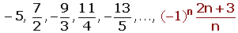
2
El numerador es una progresión aritmética con una d= 2.
El denominador es una progresión geométrica con una r= 2.
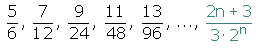
3
Si prescindimos del signo, el numerador es una P. aritmética con una d= 1.
El denominador es una progresión geométrica con una r= 3.
Por ser los términos pares los negativos multiplicamos por (-1)n+1.
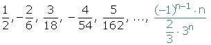
Ejercicio 2 resuelto
Estudia la monotonia, la convergencia o divergencia y las cotas (si existen) de la siguiente sucesión:
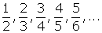
Cada término es mayor que la anterior.
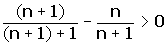
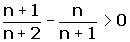
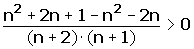
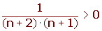
Para cualquier valor de n se cumple la desigualdad.
Es monotona estrictamente creciente.
a1= 0.5
a3= 0.6666
a1000= 0.999000999001
a1000 000 = 0.999999000001
El límite es 1
Sucesión convergente
Por ser creciente, 1/2 es una cota inferior, el mínimo.
1 es una cota superior, el supremo. o extremo superior.
Por tanto la sucesión está acotada.
0.5 ≤ a n < 1
Ejercicio 3 resuelto
Probar que . Averigua los términos cuya distancia al límite es menor que 0.01.
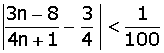
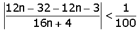
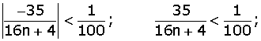
A partir de a219 la distancia al límite será menor que una centésima.
Ejercicio 4 resuelto
Calcula los siguientes límites:
Soluciones:1
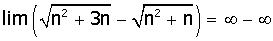
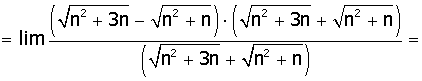
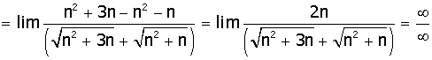
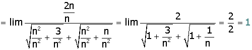
2
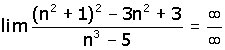
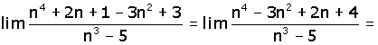
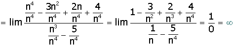
3
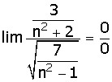
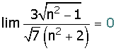
Ejercicio 5 resuelto
Hallar los siguientes límites:
Soluciones:1
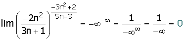
2
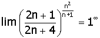
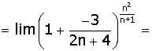
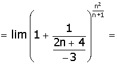
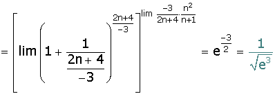
3
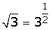
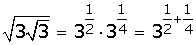
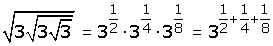
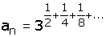
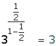
 Ejercicios
Ejercicios